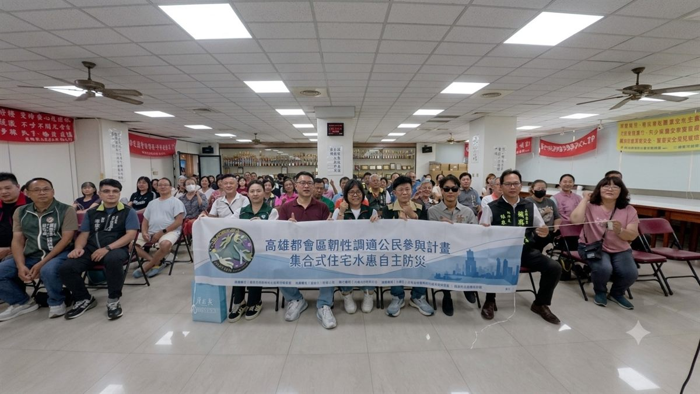
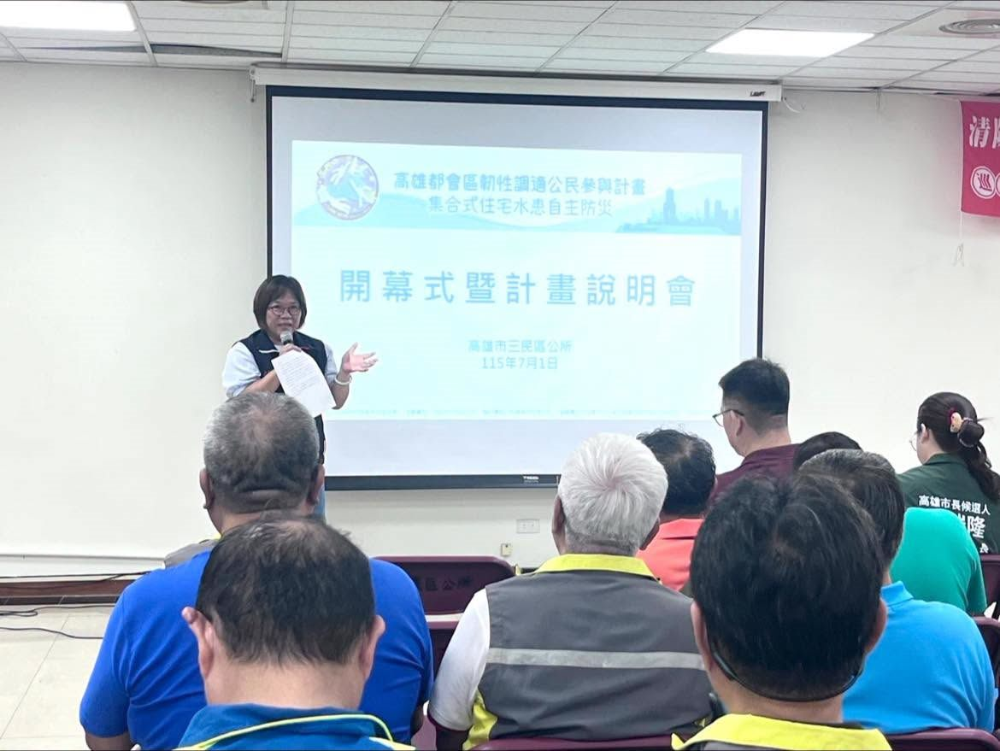
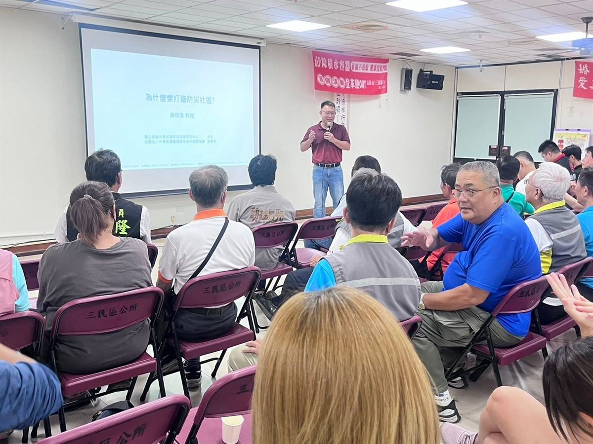
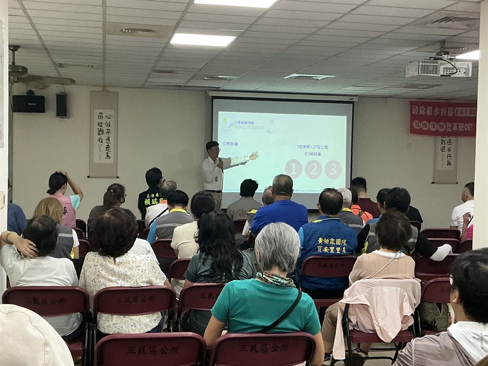
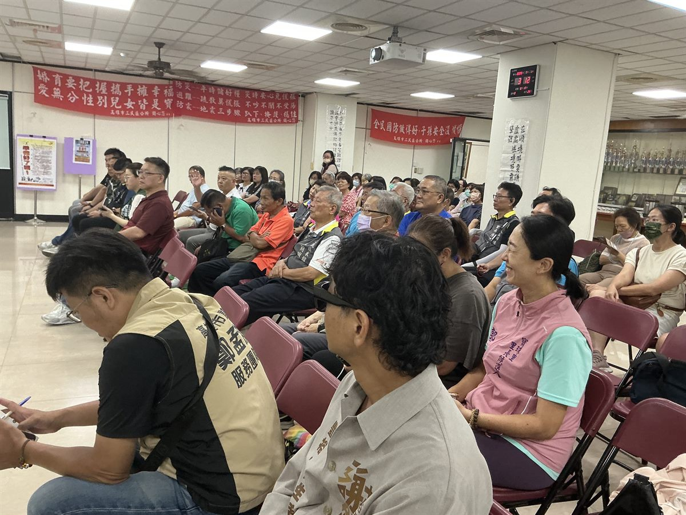
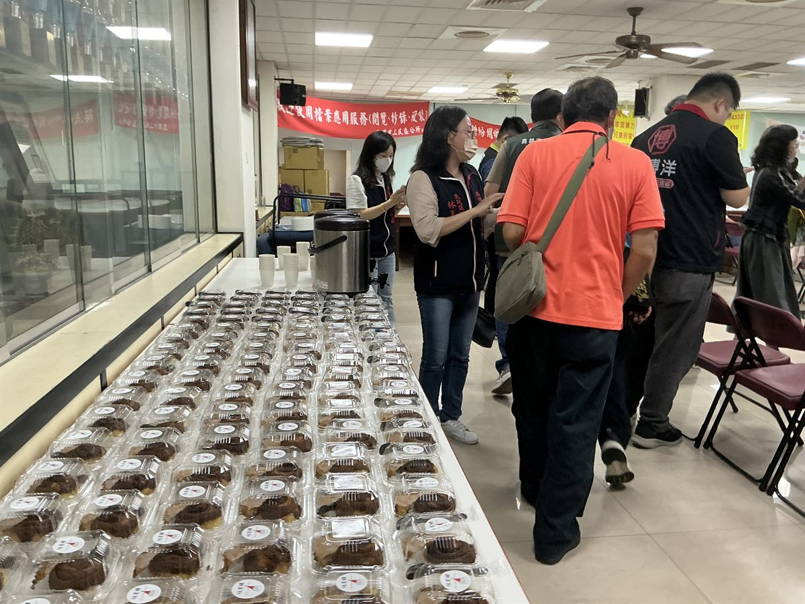

你的現場問題是最關鍵的素材・四場活動後帶走大樓防淹水行動方案
面對極端降雨，高雄社區的共同課題
問題不是設備不足，而是社區缺乏防災共識與行動機制
強降雨時，地下室停車場與機電首當其衝、損失最大；停電後電梯、抽水、門禁全失效，高樓層住戶易受困。及早了解風險，才能提前準備。
誰關防水閘門？誰協助行動不便的鄰居？多數社區沒有分工與演練，也缺應變流程。防災靠的不是設備，是平時建好的共識。
你的一線觀察就是最好的素材。四場活動結束，帶走一份可以提交管委會、直接推動的防災行動方案。
你帶問題來，帶行動方案回去・每一場活動你都有明確的角色
說明會與第 2–4 場活動分開報名，可依需求選擇參加場次
📸 活動花絮






點擊後將開新視窗前往報名表單
第 2–4 場共用同一表單，報名時請勾選欲參加場次
智慧防汛・社區守護課
吳明淏 教授｜社團法人中華民國臺灣韌性城市發展協會 理事長
災害來的時候，我們真的都一樣嗎？——從性別看防災準備
謝昀希｜高雄市同志遊行聯盟協會 理事長
🎓 上午場講師・吳明淏 教授
🏛 國立高雄大學 土木與環境工程學系 教授
🔬 國立高雄大學 災害防救科技研究中心 主任
🌏 社團法人中華民國臺灣韌性城市發展協會 理事長
🪖 高雄市防災士協會 理事長
🎓 Columbia University, Ph.D.（災害管理・土木工程）
連年主持高雄市水利局水患自主防災社區推動計畫、水利署河川分署防汛計畫，為南臺灣最具代表性的防災學者之一。
🎙 下午場講師・謝昀希
🎓 高雄師範大學 性別教育研究所 碩士
♀ 高雄市性別人才資料庫 專家學者
🏳️🌈 高雄市同志遊行聯盟協會 理事長
🎖 前中華民國陸軍 通信台長（2013–2019，六年軍職）
🐻 黑熊學院 軍事科普課程講師（2023 至今）
兼具六年陸軍軍職背景與性別教育碩士專業，長期擔任黑熊學院軍事科普講師，以女性從軍的親身視角探討性別平等與防災組織設計。
第 2–4 場共用同一表單，報名時請勾選欲參加場次
第 2–4 場共用同一表單，報名時請勾選欲參加場次
113 年「淨零轉型心行動—共創低碳永續家園公民培力計畫」成果
回饋摘自 113 年計畫參加者問卷